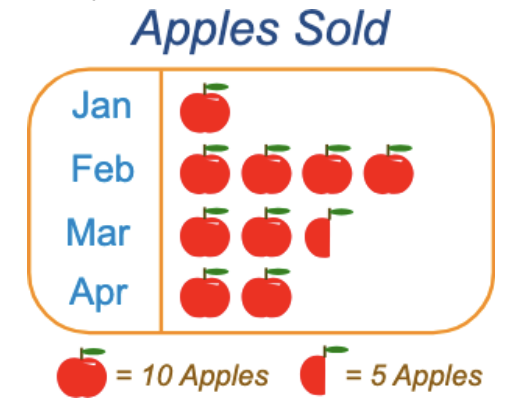

Let’s learn how to represent data using frequency tables, pictograms, bar charts, and line graphs!
By using different methods to represent data, we can better understand and compare the information.
Frequency Tables
A frequency table is a way of counting how many times something happens. It helps organize data clearly.
Example: Bug Types and Their Frequency
| Bug Type |
Frequency |
| Butterfly |
8 |
| Ladybug |
4 |
| Ants |
10 |
Pictograms
A pictogram uses pictures to show data. Each picture represents a certain number of items or occurrences.

Bar Charts
A bar chart uses bars to show how much of something there is. The taller the bar, the greater the amount!

Line Graphs
A line graph shows how data changes over time, making it easy to spot trends or patterns.